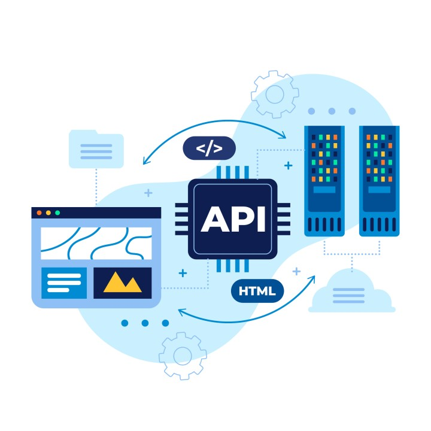

Proyectos

Módulo Contratados
Aplicación desarrollada en .NET que facilita el cálculo de remuneraciones para trabajadores portuarios, manejando la complejidad de las reglas de negocio específicas del rubro.
SOF
Aplicación desarrollada en .NET que estandariza y automatiza la emisión de certificados para las navieras, optimizando procesos críticos.

Desarrollo de APIs
APIs desarrolladas en .NET utilizando OWIN y JWT para ofrecer servicios específicos de la empresa a clientes, simplificando la integración y el funcionamiento entre aplicaciones.